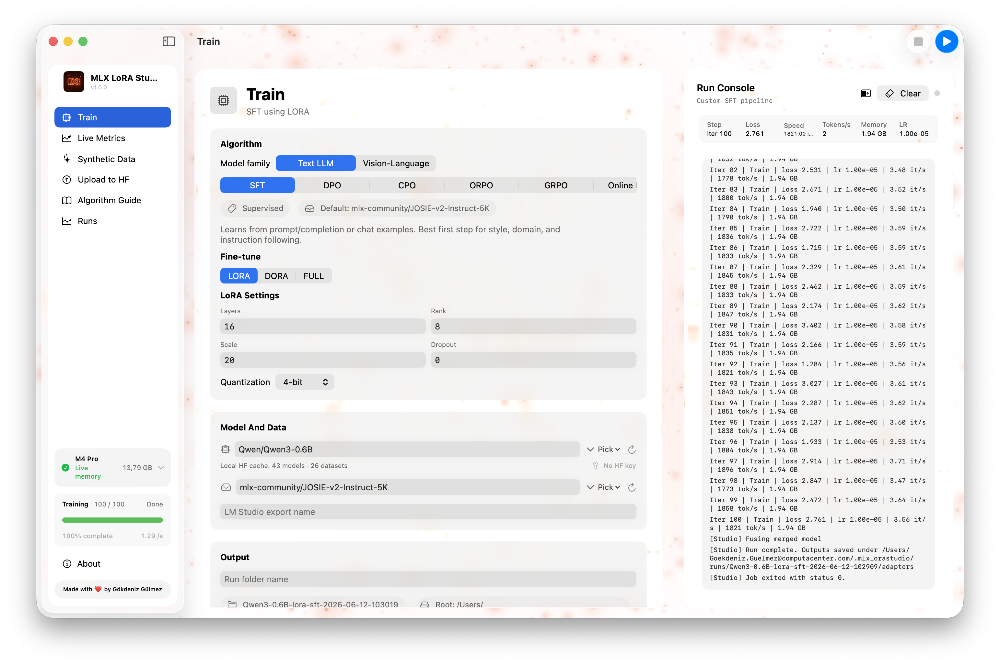
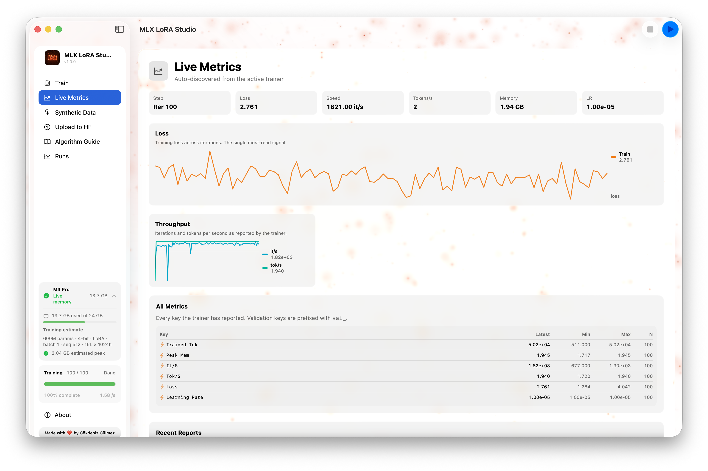
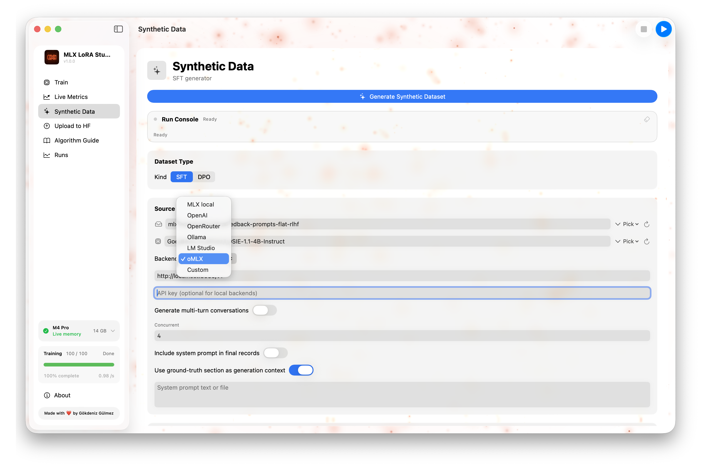
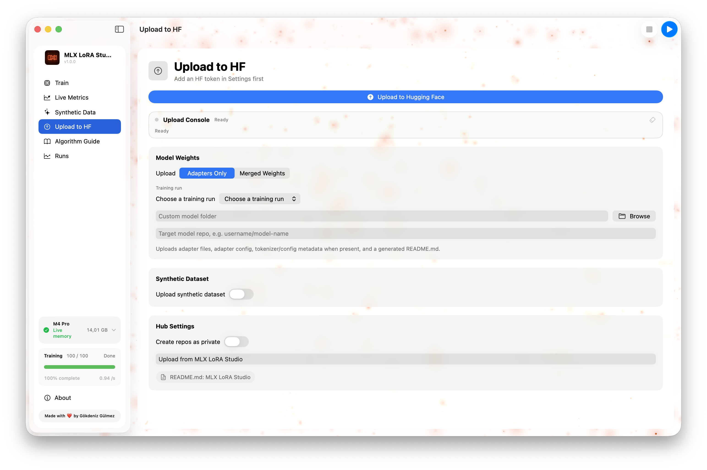
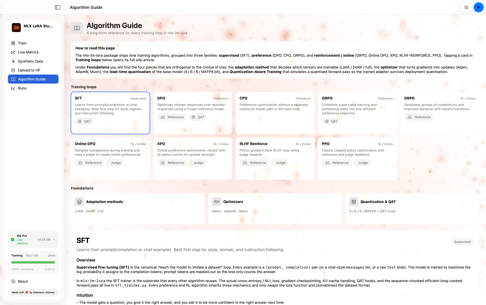
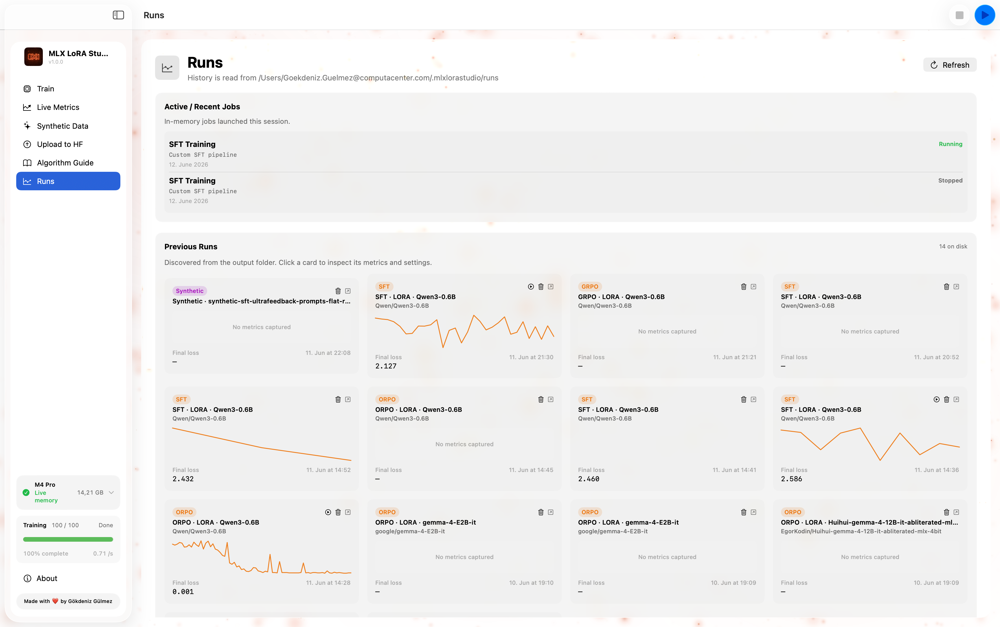

🧠
9 training algorithms
SFT, DPO, CPO, ORPO, GRPO, Online DPO, XPO, RLHF Reinforce, and PPO. Pick by use case, not by which one happens to be wired up.
MLX LoRA Studio turns model fine-tuning into a normal Mac app. Pick a model, choose an algorithm, watch the loss fall — all on-device, with no cloud, no Jupyter, no mystery.

Features
Nine algorithms, four adapter types, live metrics, synthetic data, and a one-click path to the Hugging Face Hub — all in one window.
SFT, DPO, CPO, ORPO, GRPO, Online DPO, XPO, RLHF Reinforce, and PPO. Pick by use case, not by which one happens to be wired up.
LoRA, DoRA, QLoRA at 4/6/8-bit, full fine-tuning, and Quantization-Aware Training (QAT) for SFT, DPO, and ORPO.
Loss, learning rate, gradient norm, throughput, and a scrolling log — all streaming from the trainer, step by step.
Generate prompts, SFT pairs, and DPO triples from local models, preview them in-app, and feed them straight into a training run.
Push a finished adapter to the Hub with a model card, license, and tags. No scripts, no token juggling.
Watches the OS memory pressure signals and refuses to start a job the system can't fit — with a clear human-readable reason.
Studio finds an existing venv that has the trainer installed, or provisions one for you. No “I forgot to install the deps” loop.
A reference for every supported algorithm — what it is, when to use it, and the failure modes to watch for.
Every run, its YAML, and its adapter are kept locally — re-run, resume, or upload them in a click from the Runs tab.
A guided tour
The app is organised around a sidebar — each section maps to a single screen in the detail pane. The whole loop lives in one window.
01 · Train
Model & data, adapter shape, optimization, algorithm-specific fields, and resume/output — all in one form, with a live memory estimate at the bottom.

02 · Live Metrics
A second-by-second view of what the runner is doing — loss / reward / KL over the last N steps, tokens per second, and a scrolling console for when something looks off.

03 · Synthetic Data
Three sub-modes, all driven by models on your Mac: prompt generation, SFT pair generation, and DPO preference generation. Preview in-app, export to JSONL, and feed it back into Train.

04 · Upload to HF
A guided form for pushing a finished adapter to the Hugging Face Hub — repository name, visibility, license, model card fields, and token source. One Push button.

05 · Algorithm Guide
A built-in reference for all 9 supported algorithms. Each entry covers what it is, when to use it, the key hyperparameters, and the failure modes to watch for.

06 · Runs
A table of every run Studio has ever done, sorted by recency. Status, algorithm, base model, dataset, last loss, duration. Open it back into the form, resume from the adapter, upload to HF, or reveal in Finder.
~/Library/Application Support/MLXLoRAStudio/runs/Supported training methods
All combinations are exposed in the Train tab's adapter section. Mirrored from the underlying mlx-lm-lora trainer.
Supervised fine-tuning
Preference
RL & online
Adapter types
Under the hood
A small Swift side, a small Python side, and the same trainer you can run from the CLI. They talk over a line-delimited JSON protocol — no polling, no magic.
The form is a view over a YAML config. The same config can be exported and re-run on the CLI.
A subprocess wrapper that streams stdout line by line back to the Swift side, plus live memory monitoring.
The actual trainer — vendored at
vendor/mlx-lm-lora/, the same code the CLI uses.
MLX-native, fused-metal on Apple Silicon.
Requirements
MLX LoRA Studio depends on Apple's MLX framework, which is Apple Silicon–only.
Memory expectations
Approximate, batch_size 2, 2048-token sequences.
Install
MLX-LoRA-Studio.dmg./Applications./Applications or Spotlight.The first time you start a run, Studio will discover or provision a Python environment with the right dependencies — no terminal needed.
Requires the Xcode command-line tools (Swift 5.9+, macOS 14+ SDK).
# Clone the repo
git clone https://github.com/Goekdeniz-Guelmez/MLX-LoRA-Studio.git
cd MLX-LoRA-Studio
# Build + run the app
./script/build_and_run.sh
# Build a release .dmg
./script/build_and_run.sh --package
The output .app is fully self-contained — you can
copy it to another Mac and it will still run.
Open source, MIT-licensed, and built for the chip in front of you.